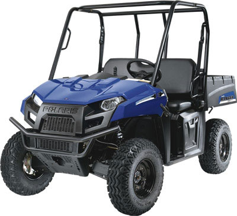

Electric UTVs’ powertrains consist of a bank of deep-cycle batteries that provide the “fuel” to run a DC electric motor that drives a transaxle and propels the wheels. Deep-cycle batteries are different from the standard lead-acid battery used to start your car and are designed to provide a steady supply of current over a long period of time. Range before recharge can be a consideration if you cover a lot of ground. Unlike a gasoline vehicle that can be refueled in a few minutes, recharging an electric vehicle will take several hours.
To learn more about specific electric utility vehicles, check out the models listed below.
2010 Polaris Ranger EV Electric-Powered Side-By-Side
Polaris calls this vehicle "perfect... for farming, ranching, hunting and recreational riding."
Batteries: Lead-acid
Distance (approximate range before recharge): 50 miles, depending on conditions
MSRP: $10,699
To learn more about the Polaris Ranger EV and see a video of it in action, read Polaris Announces Electric Utility Vehicle for 2010 from GRIT editor Hank Will.
This E-UTV can be registered as a motorcycle in many states, allowing it to be driven on city streets.
Batteries: Silicone gel
Distance: 35 miles
MSRP: $8,999
The XRT850 is described as having " power that's big enough to tackle the toughest jobs in a package that's compact enough to fit into the back of a pickup truck."
Batteries: Lead-acid
Distance: 30 miles
MSRP: $6,539 with fold down rear seat
Featuring a sturdy, aluminum 2-1 rear seat and flatbed combo, and 24-inch durable all terrain tires, the HuntVe 4X4 has a total vehicle capacity of 1200 lbs.
Batteries: Lead-acid
Distance: 20 miles in a true 4X4 setting
MSRP: $9,500
Stealth Electric Utility Vehicles has two extended range E-UTVs on the market, and is currently producing the Patriot LSV.
Batteries: Silicone gel
Distance: 45 (Predator XR) to 55 (Apache XR) miles
MSRP: $10,903 (Predator XR)
For more information on selecting a utility terrain vehicle, including specs on many models, read the following articles at GRIT.
Utility Vehicle Roundup
Stray Utility Vehicles
|
 POLARIS INDUSTRIES The Ranger EV by Polaris has a range of up to 50 miles before it needs to be recharged. |
|
|